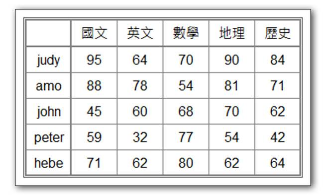

陣列可以當成是一種進階的變數，通常一個變數只會儲存或代表一筆資料，假如今天我們要處理十筆資料，那就需要建立十個變數，這會讓變數的管理變得複雜，陣列在這個情境下發揮很好的作用，可以把十筆資料用一個變數來管理，我們只需知道這個十筆資料在這個單一變數中的位置和取用方式就可以了。
PHP的陣列宣告方式
- $a=array();
- $a=[];
- $a[1]=“A”;
- $a[]=“A”;
- $a=[“A”,”B”,”C”];
- $a=[1=>”A”,2=>”B”,3=>”C”];
- $a=array(“A”,”B”,”C”);
陣列指定值的方式
- $a[1]=“A”;
- $a=[“A”,”B”,”C”];
- $a=array(“A”,”B”,”C”);
- $a=[1=>”A”,2=>”B”,3=>”C”];
陣列的維度
- 一維陣列
1
2
3
4
5
6
7
8
9
10
11
$a=[1,2,3,4,5,6,7];
$b=['小明','阿三','小美','大頭'];
$c=[
'國文'=>89,
'數學'=>75,
'英文'=>64
]; - 多維陣列
1
2
3
4
5
6
7
8
9
10
11
12
13
14
15
16
17
18
19
20
21
22
23
24
25
26
27
28
29
30
31
32
33
34
35
36
37
38
39
40
$a=[
[22,33,44,55],
[29,12,33,77],
[98,22]
];
$a=[
'數學'=>[
[
'姓名'=>'小明',
'成績'=>98
],
[
'姓名'=>'小美',
'成績'=>22
],
[
'姓名'=>'阿明',
'成績'=>60
]
],
'國文'=>[
[
'姓名'=>'小明',
'成績'=>58
],
[
'姓名'=>'小美',
'成績'=>73
],
[
'姓名'=>'阿明',
'成績'=>90
]
]
];
PHP陣列的特性
- 如果不是純索引的型式，那就一定是key-value
- 陣列中的元素資料型態不必相同
- 陣列的長度是動態可變的
陣列常用函式
| 函式名 | 功能 |
|---|---|
| is_array() | 檢查是否為陣列 |
| in_array() | 檢查某值是否在陣列中 |
| sort() | 排序陣列 |
| rsort() | 反序排序陣列 |
| array_fill() | 在陣列中填滿某值 |
| array_search() | 在陣列中尋找某值 |
| array_keys() | 將key或index取出為一個陣列 |
| array_merge() | 合併陣列 |
| serialize() | 序列化/字串化陣列 |
| unserialize() | 反序列化/陣列化字串 |
| implode() | 以字串或符號把陣列轉為字串 |
陣列操作練習
建立一個學生成績陣列
- 設計一個陣列(一維或多維)來存放學生的成績資料

利用程式來產生陣列
*以迴圈的方式產生一個九九乘法表
- 將九九乘法表的每個項目以字串型式存入陣列中
- 再以迴圈方式將陣列內容印出
威力彩電腦選號沒有重覆號碼
- 使用亂數函式rand($a,$b)來產生號碼
- 將產生的號碼順序存入陣列中
- 每次存入陣列中時會先檢查陣列中的資料有沒有重覆
- 完成選號後將陣列內容印出
找出五百年內的閏年
- 請依照閏年公式找出五百年內的閏年
- 使用陣列來儲存閏年
- 使用迴圈來印出閏年
已知西元1024年為甲子年，請設計一支程式，可以接受任一西元年份，輸出對應的天干地支的年別。
- 天干：甲乙丙丁戊己庚辛壬癸
- 地支：子丑寅卯辰巳午未申酉戌亥
- 天干地支配對：甲子、乙丑、丙寅….甲戌、乙亥、丙子….
請設計一支程式，在不產生新陣列的狀況下，將一個陣列的元素順序反轉
- 例：$a=[2,4,6,1,8] 反轉後 $a=[8,1,6,4,2]